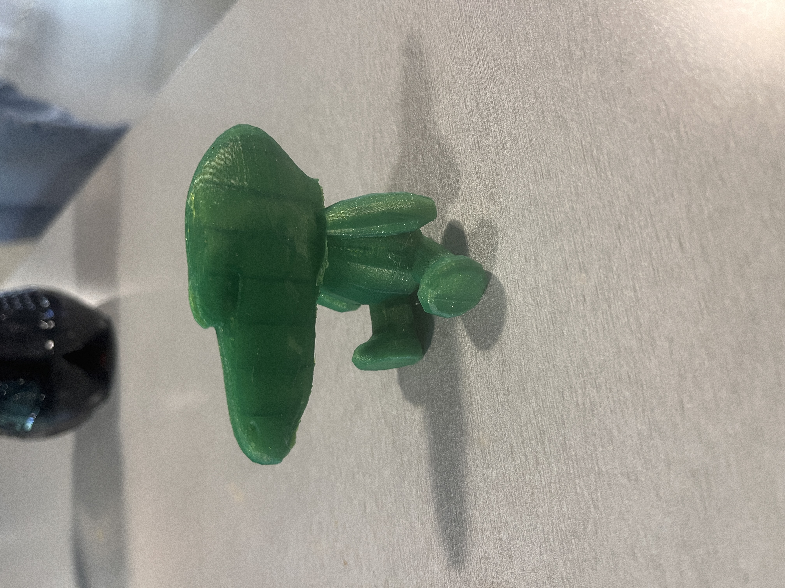
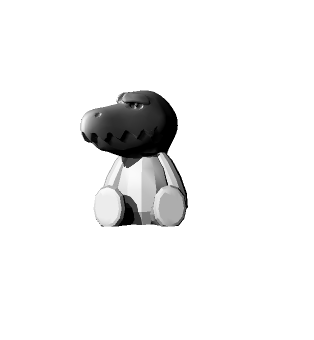
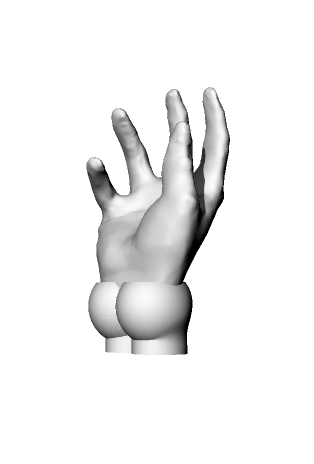
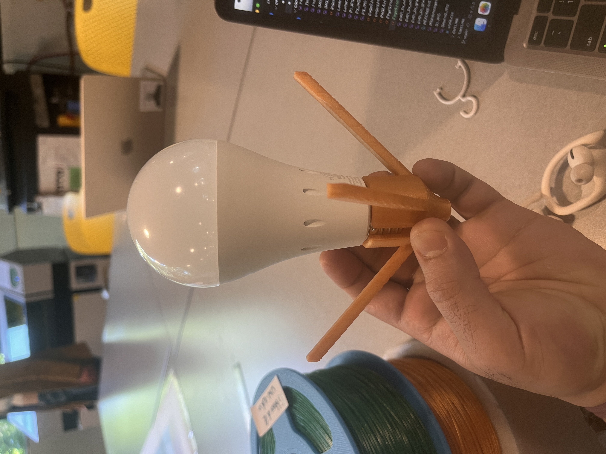
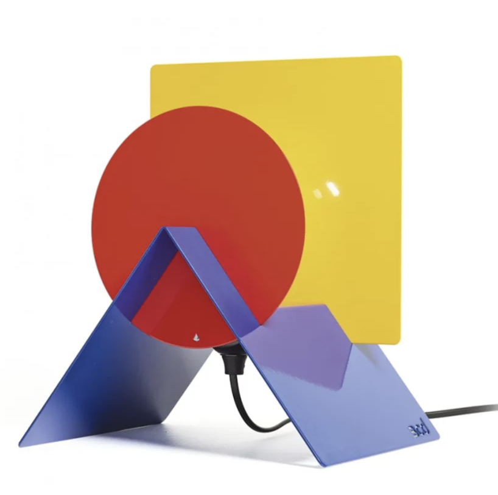
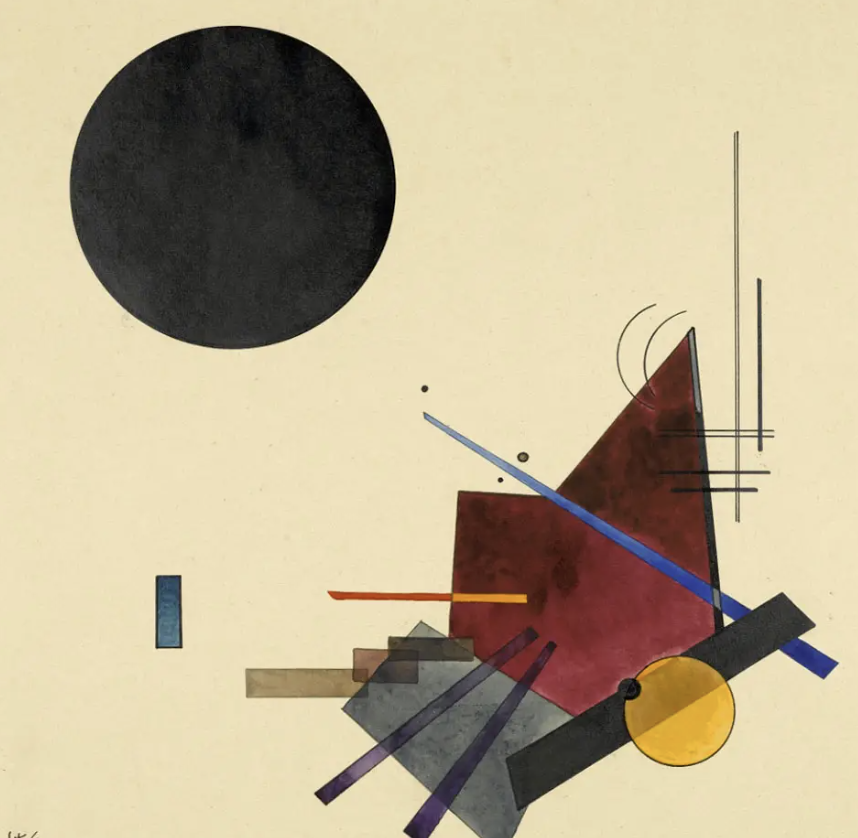

My Digital Fabrication Project
A journey through digital design and fabrication.
Part 1: STL Modification
This part of the project involved modifying the mesh of two STL files to produce a single printable STL. The objective was to ensure the final STL is suitable for rapid prototyping, passing all necessary checks in Rhino.
  Here's an image showing the complex Boolean union operation that was part of the process.
Part 2: Lamp Design
I designed a lamp that can be assembled and disassembled around its inner workings without the use of permanent fasteners. The design was influenced by considerations for a domestic setting, ensuring stability and ease of use. I am also going to use a rechargable lamp. This inspriation for this lamp will come from Bauhaus structures and design. I wanted it to be collapsable flat because I want to be able to carry it back to India without taking much space and damage. One inpiration is available below.
  
This image shows my initial designs and some of the digital fabrication techniques used. I screwed up because I didnt accomadate for the holder for the bulb and just measured the bulb.